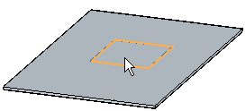
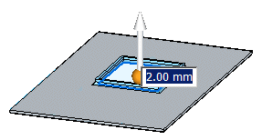
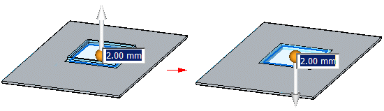
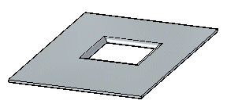

Construct a drawn cutout
In the ordered environment, you can construct drawn cutouts using the Drawn Cutout command.
In the synchronous environment, you can construct drawn cutouts using the Drawn Cutout command or the Select tool. Both workflows are explained in this topic.
Construct a drawn cutout in the ordered environment
-
Choose Home tab→Sheet Metal group→Dimple list→Drawn Cutout.
 Note:
Note:You can also right-click a region and select the command from the ribbon or the context toolbar.
-
Define the profile plane.
-
Draw a profile or copy a profile into the profile window.
-
Choose Home tab→Close group→Close.

-
Do one of the following:
-
If you drew a closed profile, skip to step 6.
-
If you drew an open profile, click to define the material side.
-
-
Click to define the extent.
-
Finish the feature.
Construct a drawn cutout using the Drawn Cutout command in the synchronous environment
-
Choose Home tab→Sheet Metal group→Dimple list→Drawn Cutout
. -
Select the region(s) to define the drawn cutout.

-
Type a value for the drawn cutout extent or use the mouse wheel for a dynamic preview of the cutout.

-
(Optional) Click the handle to change the drawn cutout direction.

-
Right-click to place the cutout.

Construct a drawn cutout using the Select tool in the synchronous environment
-
Select the region(s) to define the drawn cutout.
-
Choose Home tab→Sheet Metal group→Dimple list→Drawn Cutout
. -
Type a value for the drawn cutout extent or use the mouse wheel for a dynamic preview of the cutout.
-
(Optional) Click the handle to change the drawn cutout direction.
-
Right-click to place the cutout.
How do I
Move or edit a drawn cutoutLearn more
Constructing drawn cutoutsLook up more details
Drawn Cutout commandDrawn Cutout command bar
Drawn Cutout command bar
Drawn Cutout Options dialog box